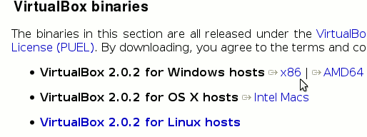
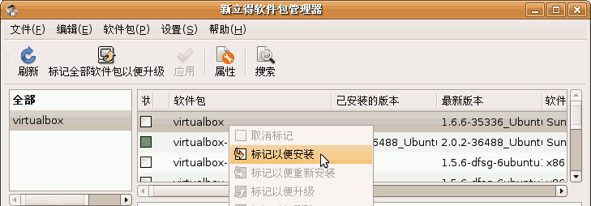
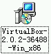
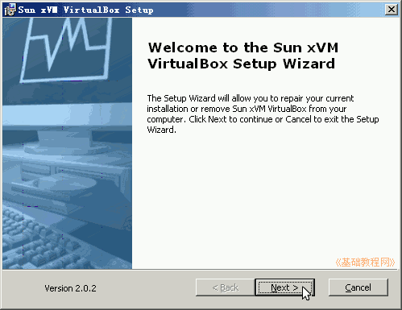
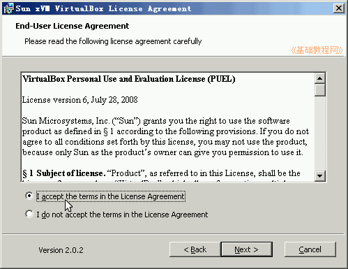
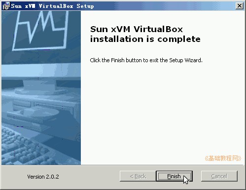
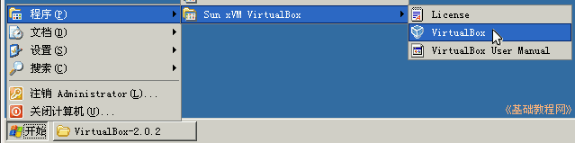
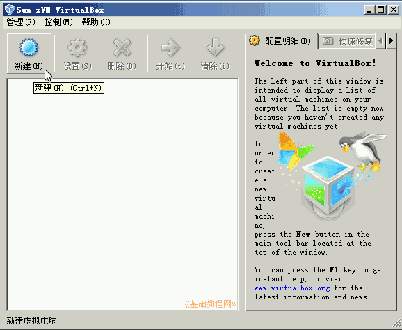
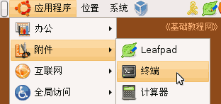
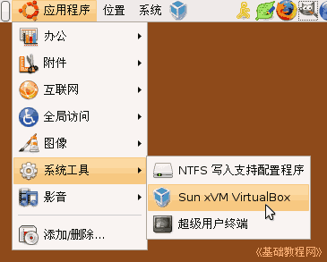

VirtualBox 虚拟机基础入门教程
作者：TeliuTe 来源：基础教程网
VirtualBox是一款免费的虚拟机软件，使用它可以很方便地创建虚拟机系统，下面我们来看一个练习；
1、下载安装包
1）官方下载：http://www.virtualbox.org/wiki/Downloads，在页面中找到windows版本或者Linux版本，点蓝色链接进入下载页面；

霏凡软件站：http://www.crsky.com/soft/9441.html，windows版本下载；
2）Ubuntu中可以进入新立得，搜索“virtualbox”，然后点右键选“标记以便安装”，然后点上面工具栏的“应用”按钮；

2、Ｗindows里面安装VirtualBox1）下载以后如果是压缩包先解压，得到一个安装程序，双击运行后开始安装；

2）在安装向导里点“Next”继续下一步；

3）接下来的许可协议里选“I accetp”同意，然后点Next继续；

4）接下来点“Install”，稍等一会到“Finish”就安装完成了；

5）安装好以后点菜单“开始－所有程序－Sun xVM VirtualBox-VirtualBox”运行虚拟机程序；

6）先出来一个注册提示，输入自己的邮箱，发送出去就可以，也可以点“取消”，以后再注册，
然后进入到主程序窗口中，工具栏左边是一个“新建”按钮，下面还是空的；

3、Ubuntu中安装驱动
1）由于内核不断升级，对应的VBox驱动也要升级，通过自己的编译来完成；
2）点左上角菜单“应用程序－附件－终端”进入终端窗口，运行下面的命令，

sudo命令要先输密码后回车，每一行输入后按一下回车键，可以用复制粘贴的方法；
3）设置VBox驱动权限，输入下面的命令；
4）运行VBox的方法是，点左上角菜单“应用程序－系统工具－Sun xVM VirutalBox”，
如果没有“系统工具”菜单项，在“应用程序”上点右键，选编辑菜单，打勾系统工具菜单项；

本节学习了下载和安装运行VirtualBox的基本操作，如果你成功地完成了练习，请继续学习下一课内容；本教程由86团学校TeliuTe制作|著作权所有
基础教程网：http://teliute.org
美丽的校园……
转载和引用本站内容，请保留版权信息和本站链接。